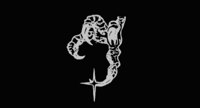

Welcome to my blog & portfolio!

Home
Welcome to tox@box, a living archive of my work and experiences in networking, voice, systems, and homelabbing.
I currently work as a Network Support Specialist at NEOnet, where I support network and voice systems. This site is where I document technical labs, troubleshooting notes, certification studies, career updates, and whatever else I happen to be learning along the way.
Whether you are a student, technician, homelabber, or experienced engineer, I hope you find something useful here.


Table of Contents
About tox@box
My name is Damon Hoody. I am a Network Support Specialist at NEOnet and a graduate of Western Governors University’s B.S. in Information Technology program. I also graduated with honors from Cuyahoga Valley Career Center’s Cisco Networking Academy and was the Business Professionals of America National First Place Winner.
My current work involves supporting both network and voice systems. Alongside general network operations and troubleshooting, I have been learning more about Cisco Unified Communications, including CUCM, SIP, RTP, CUBE, and the infrastructure that allows those services to work reliably.
I built this blog to share what I learn as I go: notes from my labs, lessons from the field, certification studies, career milestones, and stories from technical projects. The older posts reflect my early interest in cybersecurity, while the newer material follows my work in networking and Cisco voice.
You can learn more about me here.
Lab Writeups
Every network professional needs somewhere to experiment.
Here you will find writeups from physical and virtual labs involving routing, switching, campus networks, network services, security, Cisco Modeling Labs, packet analysis, and increasingly more Cisco voice.
Some projects are built around certification topics, while others begin with a question, an unusual problem, or an idea that gets slightly further out of hand than originally planned.
Explore recent labs and projects here.
Technical Notes
My technical notes are where I organize what I am studying and learning through work, homelabbing, and certification preparation.
Topics include protocol behavior, configuration examples, troubleshooting methods, network operations, Cisco Unified Communications, and the relationship between voice services and the network underneath them.
These posts are not meant to present me as an expert on every subject. They document how I understand the material at that point in my career and give me something useful to reference later.
See all notes and posts here.
Join the Community
The tox@box community is open to students, homelabbers, technicians, and engineers who enjoy learning how networks and systems actually work.
We share ideas, study together, troubleshoot problems, and help one another continue growing in the field.
Join the Discord, connect with me on LinkedIn, or explore my older security work on TryHackMe.
Contact
Feel free to reach out with questions, feedback, or professional inquiries. I am always glad to connect with others working in networking, voice, systems administration, or related areas of IT.
- Gmail: hoody.damon@gmail.com
- Personal: damon@hoody.cx
- Full contact details: /contact
Stay tuned for future updates as I continue learning how networks carry data, voice, and everything in between.
God bless you.